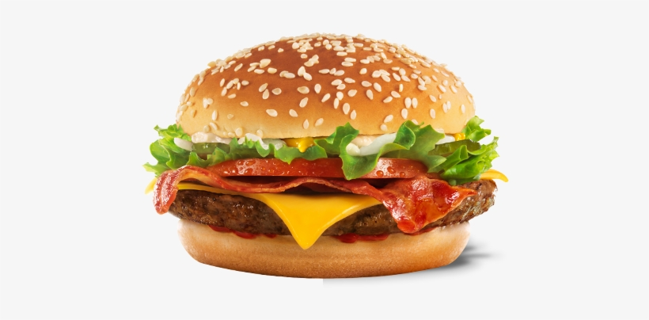

Burger Recipe

Description
A very healthy AND flavorful burger with a little extra crunch.
Ingredients
- 2 pounds extra-lean ground beef
-
1 (1 ounce) package dry onion soup mix
- 1 egg, lightly beaten
- 2 teaspoons hot pepper sauce
Steps
- Preheat an outdoor grill for medium high heat and lightly oil grate.
- In a large bowl, combine the beef, onion soup mix, egg, hot sauce and oats. Shape into 6 patties.
- Grill patties over medium high heat for 10 to 20 minutes, or to desired doneness.